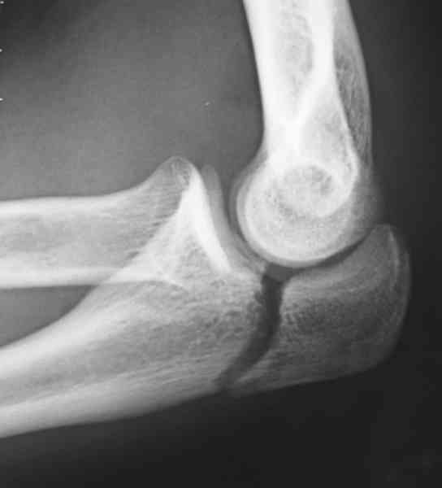
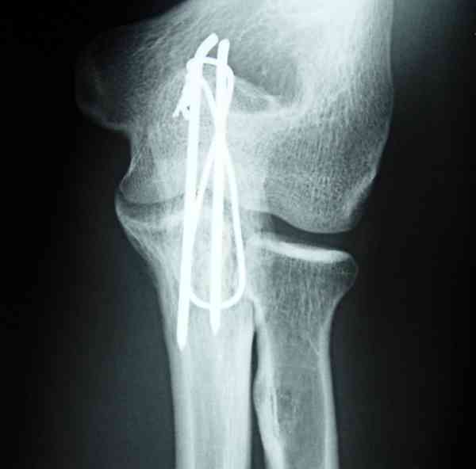
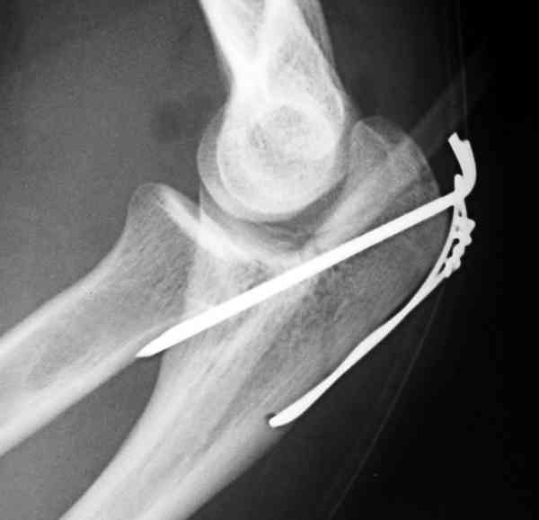

Bienvenue Sur Medical Education
Fractures : olécrane
Spécialité : traumatologie /
Points importants
-
Ce sont des fractures qui vont léser l'appareil extenseur du coude
Présentation clinique / CIMU
SIGNES FONCTIONNELS
-
Impotence du membre supérieur
-
Douleur au niveau du coude
CONTEXTE
Présentation clinique / CIMU
SIGNES FONCTIONNELS
- Impotence du membre supérieur
- Douleur au niveau du coude
CONTEXTE
Circonstances de survenue
- Choc direct
- Choc indirect par chute sur la main
- Plus rarement, contraction contrariée du triceps aboutissant à un arrachement de la pointe de l'olécrâne
EXAMEN CLINIQUE
- Gros coude
- Dermabrasions voire ouverture cutanée
- Extension active impossible
_915
- - -
Examen clinique du coude
Signes paracliniques
IMAGERIE
-
Le diagnostic est confirmé par la radiographie face + profil
-
Les fractures sont parfois simples, parfois avec une comminution d'un fragment intermédiaire
 _548 Photo Fracture de l'olécrane
Traitement
AVANT RADIOGRAPHIE
-
Traitement antalgique (protocole RICE)
-
Immobiliser : allonger le coude sur le patient ou écharpe
APRES LA RADIO
Le traitement est habituellement chirurgical
 _549 Photo Ostéosynthèse par un hauban appuyé sur 2 broches dune fracture de l'olécrane
 _550 Photo Ostéosynthèse par un hauban appuyé sur 2 broches d'une fracture de l'olécrane
- Bilan biologique pré-opératoire
- Laisser à jeun
Le traitement orthopédique
- Réservé aux très rares fractures non déplacées
- Il consiste en un plâtre brachio-palmaire
_873
- - -
Plâtre brachio-antéro-palmaire
Auteur(s) : Jean-Jacques BANIHACHEMI, Dominique SARAGAGLIADevenir / orientation
CRITERES D'ADMISSION
CRITERES DE SORTIE
ORDONNANCE DE SORTIE
RECOMMANDATIONS DE SORTIE
Bibliographie